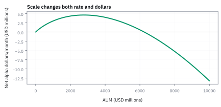

18.7 Strategy Capacity
ยิ่งเงินในกลยุทธ์มาก คำสั่งยิ่งใหญ่ impact ยิ่งกิน alpha: capacity คือขนาดที่ alpha สุทธิหมด แต่ขนาดที่ทำเงินได้มากที่สุดอยู่แค่ 4/9 ของนั้น
กลยุทธ์หนึ่งได้ alpha 0.60% ต่อเดือนก่อนต้นทุน ต้นทุนคงที่ 0.10% ต่อเดือน และ impact กินอีก $0.02\%\times\sqrt{A/10^7}$ ต่อเดือน เมื่อ $A$ คือเงินในกลยุทธ์เป็นดอลลาร์ (assets under management, AUM) และ $10^7$ คือ \$10 ล้าน ทีมขายบอกว่า “alpha ยังเป็นบวกถึง \$6.25 พันล้าน รับเงินได้ถึงตรงนั้น” ผู้ลงทุนควรเห็นด้วยไหม?
ลองตอบก่อนเปิดเฉลย
ไม่ควร ที่ \$6.25 พันล้าน alpha สุทธิเป็นศูนย์พอดี กำไรเป็นเงินก็เป็นศูนย์ เงินกำไรสูงสุดอยู่ที่ 4/9 ของขนาดนั้น คือ \$2.78 พันล้าน ได้เดือนละ \$4.63 ล้าน ทุกดอลลาร์ที่รับเกินจุดนี้ทำให้กำไรรวมของทุกคนลดลง แต่ถ้าผู้จัดการเก็บค่าธรรมเนียมตามขนาดเงิน เขายังอยากรับต่อ
สิ่งที่เราจะสร้าง
18.5 แสดงว่า impact โตตามรากที่สองของขนาดคำสั่ง และ 18.6 แบ่งคำสั่งให้ถูกที่สุด หน้านี้ถามคำถามระดับธุรกิจ: ถ้าเงินในกลยุทธ์โตขึ้นเรื่อย ๆ คำสั่งทุกคำสั่งก็โตตาม alpha สุทธิจะหมดที่ขนาดไหน และขนาดไหนทำเงินได้มากที่สุด คำถามนี้คือด้านต้นทุนของ alpha decay และ crowding ใน 15.7
ลำดับคือ ตั้งบัญชี alpha สุทธิ หาขนาดที่ alpha หมด ไล่ตารางด้วยมือ แสดงว่าตัวคูณ 0.02% มาจากกฎรากที่สองได้อย่างไร พิสูจน์กฎ 4/9 ดูว่า capacity ไวต่อค่าที่ประมาณแค่ไหน แล้วดูสองเรื่องที่ทำให้ capacity จริงเล็กกว่าที่คิด: หุ้นที่เป็นคอขวด และเงินของคนอื่นที่เทรดสัญญาณเดียวกัน
ศัพท์ที่ใช้ในหัวข้อนี้
- Strategy capacity
- ขนาดเงินที่กลยุทธ์ยังได้ผลตอบแทนสุทธิหลังต้นทุนการซื้อขาย ใช้ตัดสินว่าจะปิดรับเงินใหม่เมื่อไร และจะต้องหากลยุทธ์ใหม่เมื่อไร
- AUM (assets under management)
- เงินที่กลยุทธ์ดูแล เป็นฐานที่ใช้แปลงผลตอบแทนเป็นเงิน และกำหนดขนาดคำสั่งซื้อขาย
- Gross และ net alpha
- gross คือผลตอบแทนส่วนเกินที่ backtest เห็นก่อนหักต้นทุน net คือส่วนที่เหลือหลังหักต้นทุนคงที่และ impact ซึ่งเป็นส่วนที่ผู้ลงทุนได้จริง
- Turnover และ participation
- turnover คือพอร์ตถูกซื้อขายกี่รอบต่อเดือน participation คือคำสั่งเป็นกี่เปอร์เซ็นต์ของปริมาณซื้อขายของหุ้นนั้น สองตัวนี้เปลี่ยนต้นทุนต่อคำสั่งเป็นต้นทุนต่อพอร์ต
- Crowding
- การที่หลายกองทุนเทรดสัญญาณเดียวกัน คำสั่งของทุกคนรวมกันดันราคา capacity ที่แท้จริงจึงเป็นของทุกคนรวมกัน ไม่ใช่ของเราคนเดียว
สัญลักษณ์และหน่วย
| สัญลักษณ์ | ความหมาย | หน่วย |
|---|---|---|
| $A$ | เงินในกลยุทธ์ (AUM) | \$ |
| $\alpha_g,\ c_0$ | alpha ก่อนต้นทุน และต้นทุนคงที่ | ต่อเดือน |
| $\alpha_0$ | $\alpha_g-c_0$ ส่วนที่เหลือให้ impact กิน | ต่อเดือน |
| $k$ | impact ต่อเดือนที่ขนาดอ้างอิง | ต่อเดือน |
| $x$ | $\sqrt{A/10^7}$ (ขนาดเทียบ \$10 ล้าน) | ไม่มีหน่วย |
| $\Pi(A)$ | กำไรต่อเดือนเป็นเงิน $A\,\alpha_n(A)$ | \$ ต่อเดือน |
ขั้นที่ 1 — บัญชี alpha สุทธิ
นี่คือนิยามของแบบจำลองที่หน้านี้ใช้ ไม่ใช่ผลที่พิสูจน์: alpha ก่อนต้นทุนที่ backtest เห็น ลบต้นทุนคงที่ต่อหน่วยที่ไม่ขึ้นกับขนาด (ค่าธรรมเนียม ครึ่ง spread) ลบต้นทุน impact ที่ยืมรูปรากที่สองจาก 18.5 ต้องหารด้วยขนาดอ้างอิง \$10 ล้านก่อน เพื่อให้ของใต้รากไม่มีหน่วย ทุกก้อนเป็นสัดส่วนต่อเดือน
ก้อนแรกไม่ขึ้นกับขนาด ก้อนสุดท้ายโตตามรากของขนาด เงินใหม่ไม่ได้ทำให้สัญญาณฉลาดขึ้น แค่ทำให้คำสั่งใหญ่ขึ้นจนดันราคาตัวเองแรงขึ้น alpha สุทธิจึงลดลงทุกครั้งที่เงินเพิ่ม
ขั้นที่ 2 — ขนาดที่ alpha สุทธิหมด
capacity แบบหยาบที่สุดคือขนาดที่ alpha สุทธิเป็นศูนย์พอดี ตั้งให้ $x=\sqrt{A/10^7}$ แล้วแก้ย้อนกลับทีละขั้น
alpha 0.60% หักต้นทุนคงที่ 0.10% เหลือ 0.50% ให้ impact กิน impact กินหมดเมื่อรากเท่ากับ 25 เพราะต้นทุนโตแค่ตามราก การยกกำลังสองกลับจึงให้ขนาดถึง \$6.25 พันล้าน ไม่ใช่หลักร้อยล้าน ขนาดนี้คือเพดาน ไม่ใช่ขนาดที่ควรใช้
Figure 18.7a — alpha สุทธิลดลงเมื่อเงินโต

แกนนอนคือ AUM หน่วยล้านดอลลาร์ 1 ถึง 8,000 (400 จุด) แกนตั้งคือ alpha สุทธิต่อเดือน (%) $0.6-0.1-0.02\sqrt{A/10}$ เมื่อ $A$ เป็นล้าน เส้นประแดงคือ \$6,250 ล้านที่ alpha หมด หลังจากนั้นติดลบ ตัวเลขทั้งหมดเป็นแบบจำลองสมมติ ไม่ใช่กลยุทธ์จริง
ขั้นที่ 3 — ไล่ด้วยมือ: อัตราลดตลอด แต่เงินยังโต
โจทย์ให้อะไรมาบ้าง: แบบจำลองของขั้นที่ 1 ที่ AUM ห้าระดับ กำไรต่อเดือนเป็นเงินคือ AUM คูณ alpha สุทธิ
คำตอบ: impact ที่ \$100 ล้านคือ $0.02\%\sqrt{10}=0.0632\%$ ที่ \$1 พันล้านคือ $0.02\%\sqrt{100}=0.20\%$ alpha สุทธิเป็นอัตราลดลงตลอด แต่กำไรเป็นเงินยังโตไปอีกนานเพราะฐานใหญ่ขึ้น แล้วขึ้นถึงยอดก่อนจะกลับลงเป็นศูนย์ที่ \$6.25 พันล้าน
ตรวจเองใน 10 วินาที: ที่ \$1 พันล้าน $0.60-0.10-0.20=0.30\%$ และ $0.003\times10^9=\$3$ ล้าน
Figure 18.7b — ก้อนต้นทุนเทียบกับ alpha ก่อนต้นทุน

แกนนอนคือ AUM 10 ถึง 5,000 ล้านดอลลาร์ (300 จุด) เส้นแดงคือ impact $0.02\%\sqrt{A/10}$ เส้นประส้มคือต้นทุนคงที่ 0.1% เส้นจุดเขียวคือ alpha ก่อนต้นทุน 0.6% สามเส้นวาดแยกกัน ไม่ได้ซ้อน impact หมด alpha เมื่อถึง 0.5% ซึ่งอยู่ที่ \$6,250 ล้าน เลยขอบขวาของรูป (ที่ \$5,000 ล้าน impact คือ 0.447%)
ขั้นที่ 4 — กฎ 4/9: ขนาดที่ทำเงินมากที่สุด
ผู้ลงทุนไม่ได้กินอัตรา แต่กินเงิน จึงต้องหาขนาดที่ $\Pi(A)=A\,\alpha_n(A)$ สูงสุด ทำในรูปทั่วไป $\alpha_0=\alpha_g-c_0$ แล้วเปลี่ยนตัวแปรเป็น $x=\sqrt{A/10^7}$ เพื่อให้ได้พหุนาม หาอนุพันธ์ตาม 12.2
$x_0=\alpha_0/k$ คือรากที่ alpha หมด จุดสูงสุดอยู่ที่สองในสามของราก ยกกำลังสองกลับเป็นขนาดได้ 4/9 หรือ 44.4% ของ capacity เสมอ ไม่ขึ้นกับตัวเลขของกลยุทธ์ ตราบใดที่ impact เป็นรูปรากที่สอง ที่จุดนั้น impact กินไปสองในสามของ $\alpha_0$ เหลือหนึ่งในสาม คือ $0.005/3=0.1667\%$ ต่อเดือน
ถ้าค่าธรรมเนียมคิดจากกำไร ผู้จัดการควรปิดรับเงินที่ \$2.78 พันล้าน ถ้าคิดจากขนาดเงิน แรงจูงใจพาไปถึง \$6.25 พันล้าน ทั้งที่ผู้ลงทุนได้กำไรรวมลดลงทุกดอลลาร์ที่เพิ่มหลังจุดสูงสุด
Figure 18.7c — กำไรเป็นเงินขึ้นถึงยอดแล้วลง

แกนนอนคือ AUM 1 ถึง 6,500 ล้านดอลลาร์ (500 จุด) แกนตั้งคือกำไรต่อเดือน (ล้านดอลลาร์) $A\,\alpha_n(A)$ จุดดำคือยอดที่ \$2,778 ล้าน ได้ \$4.63 ล้านต่อเดือน ซึ่งคือ 4/9 ของ capacity เส้นประแดงคือ capacity \$6,250 ล้านที่กำไรกลับมาเป็นศูนย์
ขั้นที่ 5 — ตัวคูณ 0.02% มาจากไหน: ต่อกับกฎรากที่สองของ 18.5
ตัวเลขในขั้นที่ 1 ไม่ได้ลอยมา ลองสร้างจากตลาด (ตัวอย่างสมมติ): กลยุทธ์ถือหุ้น 100 ตัวน้ำหนักเท่ากัน แต่ละตัวซื้อขายวันละ \$1 พันล้าน ความผันผวนรายวัน 2% ตัวคูณ impact $Y=0.5$ และเปลี่ยนทั้งพอร์ตเดือนละหนึ่งรอบ (ซื้อหนึ่งขา ขายหนึ่งขา แต่ละขาเสร็จในวันเดียว) คำสั่งต่อหุ้นคือ $A/100$
กลคือเขียน $\sqrt{A/10^{11}}=\sqrt{A/10^7}\cdot\sqrt{10^7/10^{11}}=0.01\sqrt{A/10^7}$ ไปกลับสองขาจึงได้ $k=0.02\%$ พอดี สองแถวสุดท้าย ($p_0$ และ $p^*$) แปลงขนาดเป็นสัดส่วนของปริมาณต่อวัน: ที่ capacity คำสั่งแต่ละตัวคือ 6.25% ของปริมาณของหุ้นนั้น ที่ขนาดทำเงินสูงสุดคือ 2.78% ตัวเลขนี้ใช้ตรวจว่าแบบจำลองสมเหตุผลได้เร็ว
ขั้นที่ 6 — capacity ไวต่อค่าที่ประมาณมาก
capacity คือ $10^7(\alpha_0/k)^2$ ทั้งสองตัวเป็นค่าที่ประมาณ และอยู่ในกำลังสอง ลองขยับ alpha ก่อนต้นทุน 0.1 จุด และลองให้ $k$ เป็นสองเท่า
alpha ที่ประมาณพลาดไป 0.1 จุด (หนึ่งในหกของ 0.6%) ทำให้ capacity อยู่ได้ตั้งแต่ \$4.0 ถึง \$9.0 พันล้าน และ $k$ ที่พลาดสองเท่าทำให้ capacity เหลือหนึ่งในสี่ capacity ที่รายงานจึงต้องมาเป็นช่วง ไม่ใช่ตัวเลขทศนิยมหลายตำแหน่ง
Figure 18.7d — capacity ไวต่อ alpha ที่ประมาณ

แกนนอนคือ alpha ก่อนต้นทุน 0.3% ถึง 1.0% ต่อเดือน (120 จุด) แกนตั้งคือ capacity $10((\alpha_g-0.001)/0.0002)^2$ ล้านดอลลาร์ จาก \$1,000 ล้านถึง \$20,250 ล้าน เส้นประคือ 0.6% ของโจทย์ เส้นโค้งหงายเพราะส่วนต่างหลังต้นทุนคงที่ถูกยกกำลังสอง เป็นความไวของแบบจำลองเดิม ไม่ใช่ช่วงความเชื่อมั่นทางสถิติ
ขั้นที่ 7 — คอขวด: หุ้น 50 ตัวไม่ได้แปลว่าสภาพคล่องกระจายเท่ากัน
โจทย์ให้อะไรมาบ้าง: กลยุทธ์ถือหุ้น 50 ตัว ตัวละ 2% หุ้น 45 ตัวซื้อขายวันละ \$1 พันล้าน อีก 5 ตัววันละ \$20 ล้าน โต๊ะห้ามส่งคำสั่งเกิน 10% ของปริมาณต่อวัน และสัญญาณต้องเปลี่ยนตำแหน่งทั้งก้อนภายในหนึ่งวัน
คำตอบ: หุ้นที่ซื้อขายมากรับเงินได้ถึง \$5 พันล้าน แต่หุ้นที่ซื้อขายน้อยห้าตัวรับได้แค่ \$100 ล้าน capacity ของทั้งพอร์ตคือ \$100 ล้าน ถ้าจะรับเงินมากกว่านี้ต้องลดน้ำหนักหรือตัดหุ้นห้าตัวนั้น ซึ่งเปลี่ยนตัวกลยุทธ์เอง
ตรวจเองใน 10 วินาที: ปริมาณเฉลี่ยของทั้ง 50 ตัวคือ $(45(1{,}000)+5(20))/50=\$902$ ล้าน ถ้าใช้ค่าเฉลี่ยจะได้ capacity \$4.51 พันล้าน สูงเกินจริง 45 เท่า capacity ถูกกำหนดด้วยคอขวด ไม่ใช่ค่าเฉลี่ย
ขั้นที่ 8 — เงินของคนอื่น: crowding กิน capacity ของเรา
ถ้ากองทุนอื่นเทรดสัญญาณเดียวกันด้วยเงินรวม $O$ คำสั่งของทุกคนรวมกันดันราคา impact ของเราจึงขึ้นกับ $A+O$ ไม่ใช่ $A$ ตัวอย่าง: $O=\$4$ พันล้าน หาขนาดที่ alpha ของเราหมด และขนาดที่เราทำเงินได้มากที่สุด ตั้ง $s=\sqrt{(A+O)/10^7}$ แล้วหาอนุพันธ์ของ $\Pi=A(\alpha_0-ks)$ เทียบ $A$
สมการกำลังสองของ $s$ ได้จากคูณเงื่อนไข $\Pi'(A)=0$ ด้วย $2\cdot10^7s$ แล้วแทน $A=10^7s^2-O$ เลือกรากบวก เงินของคนอื่น \$4 พันล้านทำให้ capacity ของเราเหลือ \$2.25 พันล้าน และกำไรสูงสุดเหลือเดือนละ \$0.53 ล้าน จาก \$4.63 ล้าน หายไป 89% ทั้งที่สัญญาณของเราไม่ได้แย่ลงเลย
คำถามที่ควรถามออกมาดัง ๆ
ถ้าเงินเพิ่มแล้วเปลี่ยนน้ำหนักพอร์ตไปหาหุ้นที่ซื้อขายง่ายล่ะ? ได้ และควรทำ ขั้นที่ 10 ของ 18.5 ใส่ต้นทุน Kissel–Glantz เข้าไปในการเลือกพอร์ต ต้นทุน impact ต่อหน่วยโตตาม $A^{0.65}$ เงินเพิ่มสองเท่า ต้นทุนต่อหน่วยโต $2^{0.65}=1.57$ เท่า พอร์ตที่ดีที่สุดจะเอียงออกจากหุ้นสภาพคล่องต่ำเรื่อย ๆ แต่ยิ่งเอียงมาก สัญญาณเดิมก็ยิ่งเจือจาง
กองทุนจริงปิดรับเงินไหม? มี ตัวอย่างที่รู้จักกันดีคือกองทุน Medallion ของ Renaissance Technologies ที่ไม่รับเงินจากภายนอกมาตั้งแต่ช่วงกลางทศวรรษ 2000 และจ่ายกำไรออกเป็นประจำเพื่อคุมขนาด ซึ่งตรงกับตรรกะของขั้นที่ 4
ความผิดที่ให้คำตอบผิดแบบเงียบ ๆ
ขยาย backtest ด้วยเงินก้อนใหม่: backtest ใช้ราคาที่ไม่ตอบสนองต่อคำสั่งของเรา ผลที่ \$10 ล้าน (0.48% ต่อเดือน) ไม่ได้บอกผลที่ \$2.78 พันล้าน (0.1667%)
ใช้ capacity เป็นขนาดเป้าหมาย: ที่ \$6.25 พันล้านกำไรเป็นศูนย์ ขนาดที่ทำเงินมากที่สุดคือ \$2.78 พันล้าน
ใช้สภาพคล่องเฉลี่ยของทั้งพอร์ต: ขั้นที่ 7 ได้ \$4.51 พันล้านจากค่าเฉลี่ย แต่คอขวดคือ \$100 ล้าน
มองไม่เห็นเงินของคนอื่น: ขั้นที่ 8 เงินของคนอื่น \$4 พันล้านลดกำไรสูงสุดของเรา 89%
รายงาน capacity เป็นตัวเลขเดียว: alpha ที่พลาด 0.1 จุดเปลี่ยน capacity จาก \$4.0 เป็น \$9.0 พันล้าน
ใช้ทำอะไรบนโต๊ะจริง
ก่อนเปิดรับเงิน ทีมวิจัยประมาณ $k$ จากคำสั่งจริงของตัวเองแบบ 18.5 หาคอขวดแบบขั้นที่ 7 แล้วรายงาน capacity เป็นช่วงแบบขั้นที่ 6 คณะกรรมการใช้กฎ 4/9 ตั้งเพดานการรับเงิน และติดตาม alpha สุทธิที่เกิดจริงเทียบกับที่แบบจำลองคาด ถ้า alpha สุทธิลดเร็วกว่าที่ขนาดอธิบายได้ มักเป็นสัญญาณของ crowding ตามขั้นที่ 8 และ 15.7
สามโจทย์ตรวจความเข้าใจ
1. ถ้า alpha ก่อนต้นทุนเป็น 0.8% ต่อเดือน (ต้นทุนคงที่และ $k$ เท่าเดิม) capacity และขนาดที่ทำเงินได้มากที่สุดคือเท่าไร ได้เงินเดือนละเท่าไร?
เฉลย
$\alpha_0=0.7\%$ ราก $x_0=0.007/0.0002=35$ capacity $10^7(35)^2=\$12.25$ พันล้าน ขนาดที่ดีที่สุด $\tfrac49(12.25)=\$5.44$ พันล้าน กำไร $5.444\times10^9\times0.007/3=\$12.70$ ล้านต่อเดือน
2. ถ้าหุ้นในกลยุทธ์ซื้อขายวันละ \$250 ล้านแทน \$1 พันล้าน (อย่างอื่นเท่าเดิมตามขั้นที่ 5) $k$ และ capacity เป็นเท่าไร?
เฉลย
$\sqrt{10^7/(100\times2.5\times10^8)}=\sqrt{4\times10^{-4}}=0.02$ จึงได้ $k=2(0.5)(0.02)(0.02)=0.04\%$ สองเท่าของเดิม capacity เหลือ $10^7(12.5)^2=\$1.5625$ พันล้าน ปริมาณน้อยลงสี่เท่า capacity ลดลงสี่เท่าพอดี
3. ในขั้นที่ 7 ถ้าตัดหุ้นห้าตัวที่ซื้อขายน้อยออก แล้วแบ่งน้ำหนักให้ 45 ตัวที่เหลือเท่ากัน capacity ตามเพดาน 10% เป็นเท่าไร?
เฉลย
น้ำหนักตัวละ $1/45=2.222\%$ ได้ $A\le0.10(10^9)/0.02222=\$4.5$ พันล้าน เพิ่มจาก \$100 ล้านเป็น 45 เท่า แต่ต้องถามต่อว่าสัญญาณยังมี alpha เท่าเดิมไหมเมื่อไม่มีหุ้นห้าตัวนั้น
คำนวณซ้ำด้วย JavaScript
โค้ดนี้คิด alpha สุทธิ capacity แบบสูตรปิด ขนาดที่ทำเงินมากที่สุดด้วย golden-section search (ตรวจกฎ 4/9 โดยไม่ใช้สูตร) ความไวต่อค่าที่ประมาณ ตัวคูณ $k$ จากตลาด คอขวด และผลของ crowding แล้วพิมพ์ตัวเลขหลักหนึ่งบรรทัด
const {sqrt} = Math;
// Monthly net alpha of a strategy with AUM A (dollars): gross - fixed - k sqrt(A / ref).
function netAlpha(A, {gross, fixed, k, ref = 1e7, others = 0}) {
if (!(Number.isFinite(A) && A >= 0)) throw new RangeError('A must be a non-negative number');
if (!(k > 0 && ref > 0)) throw new RangeError('k and ref must be positive');
return gross - fixed - k * sqrt((A + others) / ref);
}
// Zero-net capacity in closed form: sqrt((A + others)/ref) = (gross - fixed)/k.
function capacity(p) {
const edge = p.gross - p.fixed;
if (!(edge > 0)) throw new RangeError('gross alpha must exceed fixed costs');
return (p.ref || 1e7) * (edge / p.k) ** 2 - (p.others || 0);
}
// AUM that maximises monthly profit A * netAlpha(A), by golden-section search on [0, capacity].
function bestSize(p) {
const f = A => A * netAlpha(A, p), g = (sqrt(5) - 1) / 2;
let a = 0, b = capacity(p);
if (!(b > 0)) return {A: 0, profit: 0};
for (let i = 0; i < 200; i++) { const c = b - g * (b - a), d = a + g * (b - a); if (f(c) > f(d)) b = d; else a = c; }
const A = (a + b) / 2;
return {A, profit: f(A)};
}
const base = {gross: 0.006, fixed: 0.001, k: 0.0002};
const rows = [1e7, 1e8, 1e9, 25e9 / 9, 6.25e9].map(A => ({A, drag: base.k * sqrt(A / 1e7), net: netAlpha(A, base), dollars: A * netAlpha(A, base)}));
// Where k = 0.02% can come from: 100 names, $1B daily volume each, daily volatility 2%, Y = 0.5, one round trip a month.
const kFromMarket = 2 * 0.5 * 0.02 * sqrt(1e7 / (100 * 1e9));
// Bottleneck: 45 names trade $1B a day, 5 names trade $20M a day; 2% weight each; at most 10% of a day's volume.
const bottleneck = {liquid: 0.10 * 1e9 / 0.02, illiquid: 0.10 * 20e6 / 0.02};
// Crowding: others already run $4B through the same trades.
const crowded = {...base, others: 4e9};
console.log(JSON.stringify({
capacity: capacity(base), rows, best: bestSize(base), fourNinths: capacity(base) * 4 / 9,
sensitivity: {up: capacity({...base, gross: 0.007}), down: capacity({...base, gross: 0.005}), kDouble: capacity({...base, k: 0.0004})},
kFromMarket, participation: {atCapacity: capacity(base) / 100 / 1e9, atBest: bestSize(base).A / 100 / 1e9},
bottleneck, crowded: {capacity: capacity(crowded), best: bestSize(crowded)},
exercise: {capacity: capacity({...base, gross: 0.008}), best: bestSize({...base, gross: 0.008})},
scaleCost: 2 ** 0.65
}));ที่มาที่ไป
คำถามเรื่อง capacity เป็นเรื่องของผู้ปฏิบัติงานมาก่อนเป็นทฤษฎี เพราะค่าธรรมเนียมที่คิดตามขนาดเงินทำให้ผู้จัดการอยากโตเสมอ งานวิจัยเชิงประจักษ์ของกองทุนรวมและกองทุนเฮดจ์ในช่วงทศวรรษ 2000 พบว่าผลตอบแทนส่วนเกินลดลงเมื่อกองทุนโต ซึ่งเข้ากับกลไกของหน้านี้ กฎรากที่สองของ impact ที่ใช้เป็นฐานมาจากข้อมูลคำสั่งจริงตามที่ 18.5 อธิบาย
ข้อจำกัด: วิธีนี้สมมติอะไร และของจริงเป็นอย่างไร
| สมมติอะไร | ของจริง | ผลเวลาใช้งาน |
|---|---|---|
| impact ตามรากที่สองด้วย $k$ คงที่ | $k$ ประมาณจากข้อมูลและเปลี่ยนตามภาวะตลาด | capacity มีช่วงกว้าง (ขั้นที่ 6) ต้องรายงานเป็นช่วง |
| เราเทรดสัญญาณนี้คนเดียว | มีคนอื่นเทรดสัญญาณคล้ายกัน | capacity ที่แท้จริงเป็นของทุกคนรวมกัน (ขั้นที่ 8) |
| alpha ก่อนต้นทุนคงที่ | สัญญาณจางลงเมื่อมีคนรู้มากขึ้น | สองผลซ้อนกัน alpha สุทธิตกเร็วกว่าที่แบบจำลองบอก |
สิ่งที่ควรตอบได้หลังอ่าน
- alpha สุทธิ $=\alpha_g-c_0-k\sqrt{A/10^7}$ หมดที่ $10^7(\alpha_0/k)^2$ ซึ่งคือ \$6.25 พันล้านในตัวอย่าง
- กำไรเป็นเงินสูงสุดที่ 4/9 ของ capacity (\$2.78 พันล้าน เดือนละ \$4.63 ล้าน) เพราะจุดสูงสุดอยู่ที่ราก 2/3
- $k=0.02\%$ สร้างได้จากกฎรากที่สอง: 100 หุ้น ปริมาณวันละ \$1 พันล้าน ความผันผวน 2% และ $Y=0.5$
- capacity ไวต่อค่าที่ประมาณ (\$4.0 ถึง \$9.0 พันล้าน) ถูกกำหนดด้วยคอขวด (\$100 ล้าน) และถูกกินด้วยเงินของคนอื่น (เหลือ \$2.25 พันล้าน)
18.8 ลงไปที่ระดับคำสั่งเดียว: ถ้าวาง limit order รอในคิว จะได้ของเมื่อไร และส่วนลดที่ตลาดจ่ายให้คนวางคำสั่ง (rebate) คุ้มกับราคาที่วิ่งสวนหลังได้ของไหม